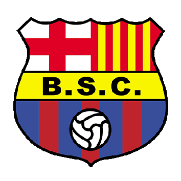

HISTORIA
Barcelona Sporting Club, mayormente conocido como Barcelona, es un club deportivo ecuatoriano originario de la ciudad de Guayaquil, fundado el 1 de mayo de 1925. Su disciplina principal es el fútbol en el que es parte de la Serie A de Ecuador desde 1957 y, a partir de 1965, es el único club que ha disputado todas las temporadas desde el comienzo del profesionalismo en 1957. Posee el Estadio Monumental Isidro Romero Carbo, el cual tiene una capacidad de 57267 personas,reglamentariamente aunque en enero de 1998 llegó a su límite de 91 230 personas. Este fue inaugurado el 27 de diciembre de 1987 con el nombre de Estadio Monumental de Barcelona Sporting Club y en 1992 cambió el nombre por el de Estadio Monumental Isidro Romero Carbo. Desde 2008 hasta la actualidad se lo conoce por el nombre comercial Estadio Monumental Banco Pichincha. El equipo mantiene una rivalidad futbolística histórica[Aclaración requerida] con el Club Sport Emelec con quien disputa el denominado Clásico del Astillero, considerado como el partido de mayor tradición de Ecuador.